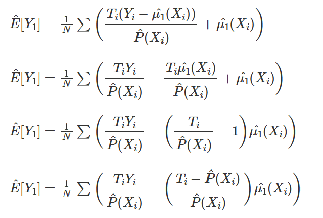

01 - Introduction To Causality
ATE = Average Treatment Effect ATT = Average Treatment Effect on the Treated
The bias is given by how the treated and control group differ before the treatment, in case neither of them has received the treatment.
If , then, association IS CAUSATION!
When there is bias:
no bias:
02 - Randomised Experiments
Randomisation annihilates bias by making the potential outcomes independent of the treatment.
Saying that the potential outcomes are independent of the treatment is saying that they would be, in expectation, the same in the treatment or the control group. … the only thing generating a difference between the outcome in the treated and in the control group.
In causal questions, we usually can argue in both ways: that X causes Y, or that it is a third variable Z that causes both X and Y, and hence the X and Y correlation is just spurious. For this reason, knowing the assignment mechanism leads to a much more convincing causal answer.
03 - Stats Review: The Most Dangerous Equation
Moivre’s equation talks about a fundamental fact about the reality of information and records in the form of data: it is always imprecise.
standard deviation, confidence intervals
Hypothesis testing, p-values
04 - Graphical Causal Models
conditional independence of the potential outcomes:
and
backdoor path and
collider and
A path is blocked if and only if:
- It contains a non collider that has been conditioned on
- It contains a collider that has not been conditioned on and has no descendants that have been conditioned on.
- . It contains a collider that it has not been conditioned on.
- . It contains a collider that it has been conditioned on.
- . It contains the descendent of a collider that has been conditioned on. You can see G as some kind of proxy for A here.
- . It contains a collider, B→E←F, that it has not been conditioned on.
- . It contains a collider, B→E←F, that it has been conditioned on.
- . It contains a collider, B→E←F, that it has been conditioned on, but it contains a non collider that has been conditioned on. Conditioning on E opens the path, but conditioning on C closes it again.
Confounding bias
The first significant cause of bias is confounding. It happens when the treatment and the outcome share a common cause.
Selection Bias
If confounding bias happens when we don’t control for a common cause, selection bias is more related to effects. One word of caution here, economists tend to refer to all sorts of biases as selection bias.
Often, selection bias arises when we control for more variables than we should. It might be the case that the treatment and the potential outcome are marginally independent but become dependent once we condition on a collider.
Among them, you control for investments. But investment is not a common cause of education and wage. Instead, it is a consequence of both. More educated people both earn more and invest more. Also, those who make more invest more. Since investment is a collider, by conditioning on it, you are opening a second path between the treatment and the outcome, which will make it harder to measure the direct effect. … But by doing so, you are also indirectly and inadvertently not allowing wages to change much.
As a side note, all of this we’ve discussed is true if we condition on any descendent of a common effect.
A similar thing happens when we condition on a mediator of the treatment.
05 - The Unreasonable Effectiveness of Linear Regression
It means that the coefficient of a multivariate regression is the bivariate coefficient of the same regressor after accounting for the effect of other variables in the model.
… Even if we can’t use randomised controlled trials to keep other factors equal between treated and untreated, regression can do this by including those same factors in the model, even if the data is not random!
OVB = Omitted Variable Bias
To put it more succinctly, we say that there is no OVB if all the confounding variables are accounted for in the model. We can also leverage our knowledge about causal graphs here.
… This is to show that causal inference with non-random or observational data should always be taken with a grain of salt. We can never be sure that all confounders were accounted for.
06 - Grouped and Dummy Regression
This phenomenon of having a region of low variance and another of high variance is called heteroskedasticity.
weighting for the size of each group, if the variables are grouped
interaction terms for dummy variables
07 - Beyond Confounders
Fortunately, regression can help us lower this variability. The trick is to use additional controls. If a variable is a good predictor of the outcome, it will explain away a lot of its variance.
But maybe controlling for it lowers the variance, right? Well, not true again. In order for a control to lower the variance, it has to be a good predictor of the outcome, not of the treatment, which is the case here.
Still, we might want to control it right? It can’t hurt… Or can it?
Surprisingly, it can hurt!
So the bottom line is that we should add controls that are both correlated with the treatment and the outcome (confounder), like the severity in the model above. We should also add controls that are good predictors of the outcome, even if they are not confounders, because they lower the variance of our estimates. However, we should NOT add controls that are just good predictors of the treatment, because they will increase the variance of our estimates.
… However, both are part of the causal effect of the email, so we don’t want to hold them fixed. Instead, we could argue that email increases payments precisely because it boosts the agreement rate. If we fix those variables, we are removing some of the true effect from the email variable.
This sort of bias is so pervasive it has its own name. While confounding is the bias from failing to control for a common cause, selection bias is when we control for a common effect or a variable in between the path from cause to effect.
Conditional-on-Positives
The issue is in estimating the COP part. It will be biased even under random assignment. On an intuitive level, it’s not crazy to think that some units are zeros only because they didn’t get the treatment. The treatment would cause them to not be zeros.
Knowing this, if we remove the zeros, we will keep the never zeros on both the treated and the control group. But we would remove from the control those that flip from zero to not zero with the treatment.
08 - Instrumental Variables
One way to control for OVB is, well, adding the omitted variable into our model. However, that is not always possible, mostly because we simply don’t have data on the omitted variables.
Another way of saying this is that this instrument Zi is uncorrelated with Y0, but it is correlated with T. This is sometimes referred to as the exclusion restriction.
where is a confounder. By definition, the instrumental variable should satisfy:
two stage regression
- . This is saying that we should have a strong 1st stage, or that the instrument indeed impacts the treatment variable.
- . This is the exclusion restriction, stating that the instrument Z only affects the outcome Y through the treatment T.
Unfortunately, we can’t verify the second IV condition. We can only argue in favor of it.
However, it doesn’t matter how strong the second stage is if we have a weak first stage. A weak first stage means that the instrument has only a very small correlation with the treatment. Therefore, we can’t learn much about the treatment from the instrument.
As we can see in the plots above, estimates vary wildly when the correlation between T and Z is weak. This is because the SE also increases a lot when the correlation is low.
Another thing to notice is that 2SLS is biased! Even with high correlation, the parameter estimate still does not reach the true ATE of 2.0. Actually, 2.0 is not even in the 95% CI! 2SLS is only consistent, which means that it approaches the true parameter value if the sample size is big enough.
-
2SLS is biased towards OLS. This means that if OLS has a negative/positive bias, 2SLS will also have it. The advantage of 2SLS is that it is at least consistent, where OLS is not, in the case of omitted variables. In the example above, our unobserved U impacts negatively the outcome but its positively correlated with the treatment, which will result in a negative bias. That is why we are seeing the ATE estimate below the true value (negative bias).
-
The bias will increase with the number of instruments we add. If we add too many instruments, 2SLS becomes more and more like OLS.
Besides knowing how this bias behaves, a final piece of advice is to avoid some common mistakes when doing IV:
-
Doing IV by hand. As we’ve seen, IV by hand will result in wrong standard errors, even if the parameter estimates are right. The SE won’t be completely off. Still, why do it if you can use software and get the right SE?
-
Using anything other than OLS on the 1st stage. Lots of Data Scientist encounter IV and think they can do better. For example, they see a dummy treatment and think about replacing the 1st stage by a logistic regression, after all, they are predicting a dummy variable, right?. The problem is that this is plain wrong. The consistency of IV relies on a property that only OLS can give, which is the orthogonality of the residuals, so anything different than OLS on the 1st stage will yield something biased. (OBS: there are some modern techniques that use Machine Learning for IV, but their results have been, at best, questionable).
(when you do it by hand)
09 - Non Compliance and LATE
It partitions the world into 4 kinds of subjects, depending on how they respond to the instrumental variable.
- Compliers
- Never Takers
- Always Takers
- Defiers
You see, if we do this, we are actually answering a different question than the one we intended to. We would be finding the causal effect of treatment assignment, not of the treatment itself. … is the causal effect of treatment assignment an unbiased estimate of the ATE?
As it turns out, it is not. Because of non compliance, the outcome of those assigned to the treatment will be pushed in the direction of the outcome of those assigned to the control.
Local average treatment effect (LATE) makes it explicit the population for which we can estimate the causal effect.
This is the independence Assumption. This says that the instrument is as good as randomly assigned. In other words, Z, the instrument, is not correlated with the potential treatments, which is the same as saying that people in different instrument groups are comparable. → does not target any particular “type” of person, e.g. always-takers or compliers
= assignment of treatment potential treatment actual treatment
- Compliers means that Ti1>Ti0
- Never Takers Ti1=Ti0=0
- Always Takers Ti1=Ti0=1
The conclusion of this is that IV says nothing about the effect on never takers, always takers or defiers, because the treatment is unchanged for them! IV only finds the treatment effect for the compliers.
… This shows that the result with 2SLS is much lower than the one we got with OLS: 3.29 against 27.60. This makes sense, since the causal effect estimated with OLS is positively biased. We also need to remember about LATE. 3.29 is the average causal effect on compliers. Unfortunately, we can’t say anything about those never takers.
10 - Matching
This estimate is done by 1) partitioning the data into confounder cells, in this case, men and women, 2) estimating the effect on each cell and 3) combining the estimate with a weighted average, where the weight is the sample size of the cell or covariate group. … This is called a non-parametric estimate, since it places no assumption on how the data was generated.
If we control for sex using regression, we will add the assumption of linearity. … Instead, regression uses weights that are proportional to the variance of the treatment in that group.
The Subclassification Estimator
Matching Estimator
Since some sort of confounder X makes it so that treated and untreated are not initially comparable, I can make them so by matching each treated unit with a similar untreated unit.
we have to define some measurement of proximity to compare how units are close to each other. One common metric for this is the euclidean norm ||Xi−Xj||. This difference, however, is not invariant to the scale of the features. This means that features like age, that take values on the tenths, will be much less important when computing this norm compared to features like income, which take the order of hundreds. For this reason, before applying the norm, we need to scale the features so that they are on roughly the same scale.
where is the sample from the other treatment group which is most similar to .
Bias arises when the matching discrepancies are huge. Fortunately, we know how to correct it. Each observation contributes (μ0(Xi)−μ0(Xj(i))) to the bias so all we need to do is subtract this quantity from each matching comparison in our estimator. To do so, we can replace μ0(Xj(i)) with some sort of estimate of this quantity μ0^(Xj(i)), which can be obtained with models like linear regression.
11 - Propensity Score
Propensity score comes from the realisation that you don’t need to directly control for confounders X to achieve conditional independence . Instead, it is sufficient to control for a balancing score . This balancing score is often the conditional probability of the treatment, , also called the propensity score e(x).
If I know what e(x) is, X alone tells me nothing more that can help me learn what T would be. Which means that controlling for e(x) acts the same way as controlling for X directly.
Notice that this estimator requires that e(x) and 1−e(x) are larger than zero. In words, this means that everyone needs to have at least some chance of receiving the treatment and of not receiving it. Another way of stating this is that the treated and untreated distributions need to overlap. This is the positivity assumption of causal inference.
We can also use the propensity score to find evidence of confounding. If a segmentation of the population has a higher propensity score than another, it means that something which is not random is causing the treatment. If that same thing is also causing the outcome, we have confounding.
To compute the standard error for the IPTW estimator, we can use the formula of the variance of a weighted average.
σw2=∑i=1nwi(yi−μ^)2∑i=1nwi
However, we can only use this if we have the true propensity score. If we are using the estimated version of it, P^(x), we need to account for the errors in this estimation process. The easiest way of doing this is by bootstrapping the whole procedure. This is achieved by sampling with replacement from the original data and computing the ATE like we did above. We then repeat this many times to get the distribution of the ATE estimate.
… Propensity score doesn’t need to predict the treatment very well. It just needs to include all the confounding variables. If we include variables that are very good in predicting the treatment but have no bearing on the outcome this will actually increase the variance of the propensity score estimator.
To see this, consider the following example (adapted from Hernán’s Book). You have 2 schools, one of them apply the growth mindset seminar to 99% of its students and the other to 1%. Suppose that the schools have no impact on the treatment effect (except through the treatment), so it’s not necessary to control for it. If you add the school variable to the propensity score model, it’s going to have a very high predictive power. However, by chance, we could end up with a sample where everyone in school A got the treatment, leading to a propensity score of 1 for that school, which would lead to an infinite variance.
… We actually need to construct the prediction in a way that controls for confounding, not in a way to predict the treatment.
Propensity Score Matching
If we control for the propensity score, we now estimate a ATE of 0.39, which is lower than the 0.47 we got previously with a regression model without controlling for the propensity score. We can also use matching on the propensity score. This time, instead of trying to find matches that are similar in all the X features, we can find matches that just have the same propensity score.
(matching on propensity scores) … One final word of caution here is that the above standard errors are wrong, as they don’t account for the uncertainty in the estimation of the propensity score. Unfortunately, bootstrap doesn’t work with matching.
12 - Doubly Robust Estimation
First, it is called doubly robust because it only requires one of the models, P^(x) or μ^(x), to be correctly specified.
if is correct, then .

Now, assume that the propensity score is correctly specified. In this case, , which wipes out the part dependent on .
… Its magic happens because in causal inference, there are two ways to remove bias from our causal estimates: you either model the treatment mechanism or the outcome mechanism. If either of these models are correct, you are good to go.
One caveat is that, in practice, it’s very hard to model precisely either of those. More often, what ends up happening is that neither the propensity score nor the outcome model are 100% correct. They are both wrong, but in different ways. When this happens, it is not exactly settled 1 2 3 if it’s better to use a single model or doubly robust estimation. As for me, I still like using them because at least it gives me two possibilities of being correct.
13 - Difference-in-Differences
… In all these cases, you have a period before and after the intervention and you wish to untangle the impact of the intervention from a general trend.
One obvious problem with Diff-in-Diff is failure to satisfy the parallel trend assumption.
14 - Panel Data and Fixed Effects
… But what would happen if we had more periods? Or more groups? Turns out this setup is so common and powerful for causal inference that it gets its own name: panel data.
One way to see the parallel (or common) trends assumptions is as an independence assumption. If we recall from very early chapters, the independence assumption requires that the treatment assignment is independent from the potential outcomes:
If the traditional independence assumption states that the treatment assignment can’t be related to the levels of potential outcomes, the parallel trends states that the treatment assignment can’t be related to the growth in potential outcomes over time.
… All we need to do is create dummy variables indicating that person and add that to a linear model. This is what we mean when we say we can control for the person itself: we are adding a variable (dummy in this case) that denotes that particular person. When estimating the effect of marriage on income with this person dummy in our model, regression finds the effect of marriage while keeping the person variable fixed. Adding this unit dummy is what we call a fixed effect model.
Now, remember how I’ve said that using panel data with a fixed effect model is as simple as adding a dummy for the entities. It’s true, but in practice, we don’t actually do it. Imagine a dataset where we have 1 million customers. If we add one dummy for each of them, we would end up with 1 million columns, which is probably not a good idea. Instead, we use the trick of partitioning the linear regression into 2 separate models. We’ve seen this before, but now is a good time to recap it. Suppose you have a linear regression model with a set of features X1 and another set of features X2.
… First, we use the dummies to predict the outcome and the feature. These are steps 1 and 2 above.
Notice that fixed effect is fitting one regression line per city. Also notice that the lines are parallel. The slope of the line is the effect of marketing costs on in-app purchase. So the fixed effect is assuming that the causal effect is constants across all entities, which are cities in this case.
Just like we did a fixed effect for the individual level, we could design a fixed effect for the time level. If adding a dummy for each individual controls for fixed individual characteristics, adding a time dummy would control for variables that are fixed for each time period, but that might change across time.
There are situations where even panel data won’t help you. … The most obvious one is when you have confounders that are changing in time. Fixed effects can only eliminate bias from attributes that are constant for each individual.
Another less obvious case when fixed effect fails is when you have reversed causality. For instance, let’s say that it isn’t marriage that causes you to earn more. Is earning more that increases your chances of getting married.
15 - Synthetic Control
… However, note that the sample size here is 4, which is also the number of parameters in our Diff-in-Diff models. In this case, the standard error is not well defined, so what should we do? Another problem is that Florianopolis might not be as similar to Porto Alegre as we would want to.
To work around this, we will use what is known as “the most important innovation in the policy evaluation literature in the last few years”, Synthetic Controls. It is based on a simple, yet powerful idea. We don’t need to find any single unit in the untreated that is very similar to the treated. Instead, we can forge our own as a combination of multiple untreated units …
For each unit j and each time t, we observe the outcome Yjt. For each unit j and period t, define YjtN as the potential outcome without intervention and YjtI, the potential outcome with intervention. Then, the effect for the treated unit j=1 at time t, for t>T0 is defined as
Since unit j=1 is the treated one, Y1tI is factual but Y1tN is not. The challenge then becomes how do we estimate Y1tN. Notice how the treatment effect is defined for each period, which means it can change in time. It doesn’t need to be instantaneous. It can accumulate or dissipate. To put it in a picture, the problem of estimating the treatment effect boils down to the problem of estimating what would have happened to the outcome of unit j=1 if it had not been treated.
To estimate the treatment effect with synthetic control, we will try to build a “fake unit” that resembles the treated unit before the intervention period. Then, we will see how this “fake unit” behaves after the intervention. The difference between the synthetic control and the unit that it mimics is the treatment effect.
… This is the case where, even if T is large, N is also large, which gives too much flexibility to our linear regression model. If you are familiar with regularized models, know that you could use Ridge or Lasso regression to fix this. Here, we will look at another more traditional way to avoid overfitting.
One way to play safer is to constrain our synthetic control to only do interpolation. To do so, we will restrict the weights to be positive and sum up to one.
Notice two things here. First, interpolation won’t be able to create a perfect match of the treated unit in this case. This is because the treated is the unit with the smallest number of sales and the highest price. Convex combinations can only replicate exactly features that are in between the control units.
Another thing to notice is that interpolation is sparse. We will project the treated unit on a wall of the convex hull and this wall is defined only by a few units.
Here, we will use the idea of Fisher’s Exact Test. Its intuition is very simple. We permute the treated and control exhaustively. Since we only have one treated unit, this would mean that, for each unit, we pretend it is the treated while the others are the control.
… So what this does is it pretends that the treatment actually happened for another state, not California, and see what would have been the estimated effect for this treatment that didn’t happen. Then, we see if the treatment in California is sufficiently larger when compared to the other fake treatment. The idea is that for states that weren’t actually treated, once we pretend they were, we won’t be able to find any significant treatment effect.
if we want to test the one sided hypothesis that the effect in California is below zero, we can estimate the P-value as the proportion of times the effect in California is bigger than all the estimated effects.
16 - Regression Discontinuity Design
This is, in its own way, a sort of Local Average Treatment Effect (LATE), since we can only know it at the threshold. In this setting, we can think of RDD as a local randomized trial. For those at the threshold, the treatment could have gone either way and, by chance, some people fell below the threshold, and some people fell above.
… What can happen is that regression might focus too much on fitting the other data points at the cost of a poor fit at the threshold. If this happens, we might get the wrong measure of the treatment effect.
One way to solve this is to give higher weights for the points that are closer to the threshold. There are many ways to do this, but a popular one is to reweight the samples with the triangular kernel
… Here, the regression discontinuity is fuzzy, rather than sharp. Notice how the probability of getting the diploma doesn’t jump from zero to one at the threshold. But it does jump from something like 50% to 90%.
Just like when we have the potential outcome, we have the potential treatment status in this situation. T1 is the treatment everyone would have received had they been above the threshold. T0 is the treatment everyone would have received had they been below the threshold. As you’ve might have noticed, we can think of the threshold as an Instrumental Variable. Just as in IV, if we naively estimate the treatment effect, it will be biased towards zero.
… Students are not manipulating where they fall on the threshold. Just for illustrative purposes, the second plot shows what bunching would look like if students could manipulate where they fall on the threshold.